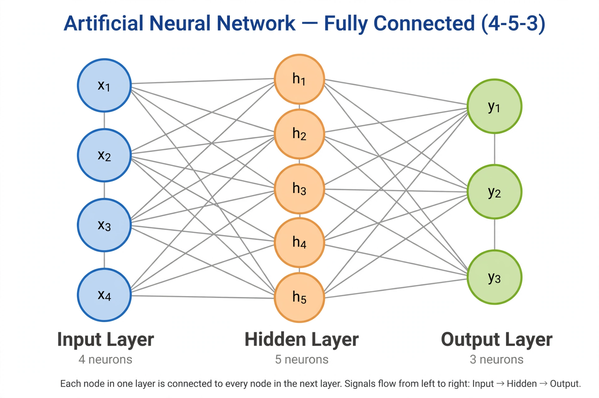

Machine learning

[Image: A neural network diagram with input, hidden and output layers]
Machine learning (ML) is a field of artificial intelligence concerned with algorithms that improve at tasks through experience — learning from data rather than being explicitly programmed. Arthur Samuel coined the term in 1959; Tom Mitchell's definition says a program learns from experience E with respect to tasks T and performance P if its performance improves with E.
ML is usually divided into supervised learning (labelled data: classification and regression), unsupervised learning (structure discovery: clustering, dimensionality reduction), and reinforcement learning (learning by reward). Deep learning, using multi-layer neural networks, drove breakthroughs in the 2010s.
Methods
Classical methods include linear and logistic regression, decision trees and random forests, support vector machines, k-nearest neighbours, naive Bayes, and k-means clustering. Neural networks — trained by backpropagation and gradient descent — dominate vision, speech, and language.
Key concerns are generalisation (avoiding overfitting), the bias–variance trade-off, feature engineering versus representation learning, and evaluation on held-out data.
Impact
Machine learning powers search ranking, recommendations, translation, speech recognition, medical imaging, and large language models. Its societal effects — bias in training data, opacity, energy use, labour impacts — are major topics of research and policy.
See also
- Artificial intelligence
- Neural network
- Statistics
- Regression analysis
- Data science
- Computer science
- Deep learning